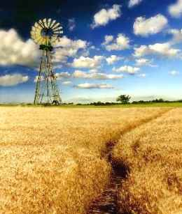
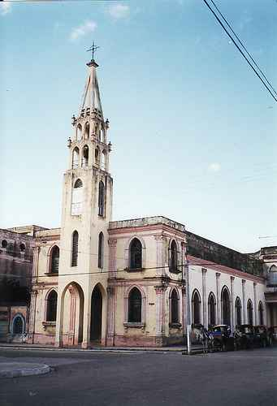

Molinos de Viento
Molinos de Viento
| Autor:José Martiniano González Peraza (Cuba) |
|---|

|
|---|
¡Nuevo! Magalys
Magalys
Que si la quise… ¡Sí!
cómo no quererla podía;
allí dejé mi farol
y una pupila encendida…
ella fue el amor
de un hombre con lirismo;
pasión que no terminan
dos lágrimas en el tiempo
(un reloj sin manecillas…)
aún la recuerdo Dios;
diosa del sol y la lluvia…
que si la quise Señor,
la quiero todavía;
como si fuera posible
que su boca fuera mía.
Anteriores
Mamá, así de sencillo
Significado de amor,
cariño azul, como el cielo,
verde pasto sobre el suelo,
cariño abierto de flor,
mujer divina, color
del arcoíris cercano,
milagro de Dios, la mano
amorosa de un secreto,
hermosa paz de un soneto
en el corazón humano.
 A la deriva
A la deriva
la flor en el arrecife
convertida en una roca,
a los lejos, sopla el viento
remolino entre las olas;
aquel mar enfurecido
en las pupilas, añora
un recuerdo moribundo
que navega en la memoria.
"A lo lejos"
Hoy no tengo en la mente
ni peces, ni trampas,
ni siquiera a un oasis,
muchas cosas me faltan,
una letra salvaje,
la moneda del alba.
Mi dramaturgo sale
de la escena y del drama,
sin llevar en la frente
quizás un fantasma.
A lo lejos, Picasso
y Shakespeare me hablan
mientras uno dibuja
y el otro cabalga.
Soy el hombre que gime sin la voz de su flauta,
sólo soy un poema
junto a Lorca en la Plaza.
Bajo el cielo, en la tierra
soy frío sin manta,
me saluda una joven
con su flor en la falda,
no importa que arrecie
la fuerza del agua,
y la primavera
tal vez demorada,
humedezca el silencio
en la historia que falta.
Estas décimas quiero
I II
Presuroso el canto arguyo, Deja que la hierba crezca
y en esta décima, quiero; en el jardín de la vida;
decir mi verso primero hablo de la hierba florida
en el faro de un cocuyo. que en el mundo permanezca.
Sin la sombra del orgullo Deja que el verso amanezca
desdigo la voz que asombra; perfumado en una flor;
yo sé deshilar tu alfombra sublime quiero el color,
metafórica, a lo lejos; imagen de nuestro cielo;
en el mar lleno de espejos, quiero dibujar el suelo
una sirena me nombra. con metáforas de amor.
Humanidad I nuestro mapa diminuto a lo lejos, junto a Dios II indaga el azul del cielo para sentir en el pecho |
 Iglesia de Placetas, Villa Clara, Cuba
|
|---|
Raíz
Mi familia: la primera
en mi pobre corazón;
mi secreto es la canción
al Dios de la Primavera.
Ella, tal vez, no me quiera,
como mi alma ha querido;
mi raíz: nunca la olvido,
y en mi verso está presente,
como un laurel en la mente,
como un jardín escondido.
| José Martiniano González Peraza nació en Placetas, Villa Clara, Cuba, el 2 de Julio de 1940 . Obtuvo el título de técnico en agronomía, estando ahora jubilado. Es activo miembro del Taller Literario José Martí de su localidad en Cuba, desde el año 1970.
|
|---|
Musicalización: Inolvidable.mid